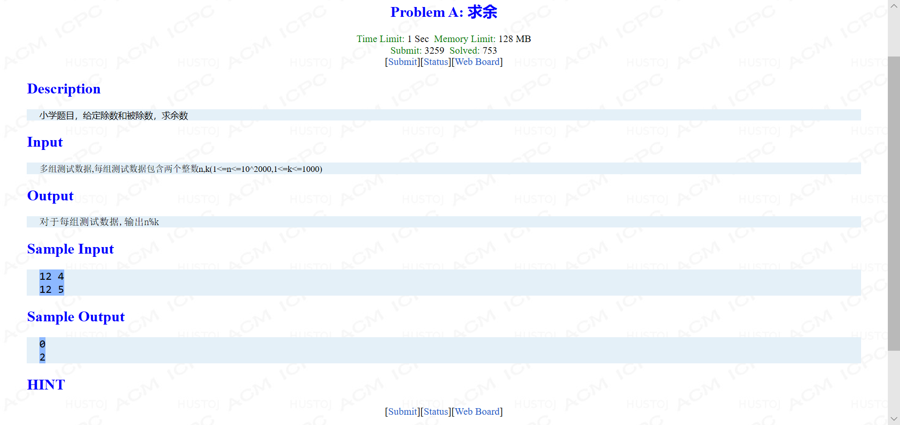
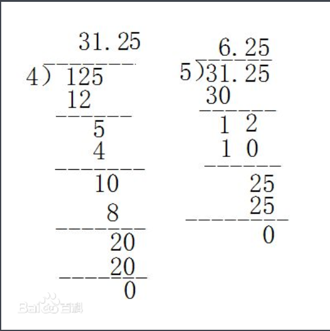

大数取余数（数组）
今天做学校的oj时遇到一题，问题可见一下截图：
查遍各大论坛，都没有遇到合适的方法，普通方法不可用，要采用数组的形式。

被除数超过long long类型，不能采用常规思路，否则会出现wrong answer。值得注意的一点，是不能用double等实数类型，只有整数类型的才可以求余数；
因此可以考虑利用数组运算，可以先定义字符串数组char a[5000]，下标多打一些没有关系，以防万一，到时候可以用scanf("%s",a)解决。
个人的思路是再定义一个整数数组int b[5000]，先把a数组中的每个字符数字转换成数字。接下去就是小学生做题目了：
前一个数字先乘以10然后再加上后一个数，进行取余数，余数再乘以10加上后一个数，以此往复即可。

完整代码如下：
1 #include <stdio.h>
2 #include <string.h>
3 int main()
4 {
5 char a[3000];
6 int k,b[3000];
7 while(scanf("%s%d",a,&k)!=EOF)
8 {
9 int l;
10 l=strlen(a);
11 int i;
12 for(i=0;i<l;i++)
13 {
14 b[i]=a[i]-'0';
15 }
16 for(i=0;i<l;i++)
17 {
18 b[i+1]=(b[i]*10+b[i+1])%k;
19 }
20 printf("%d\n",b[l-1]);
21 }
22 return 0;
23 }